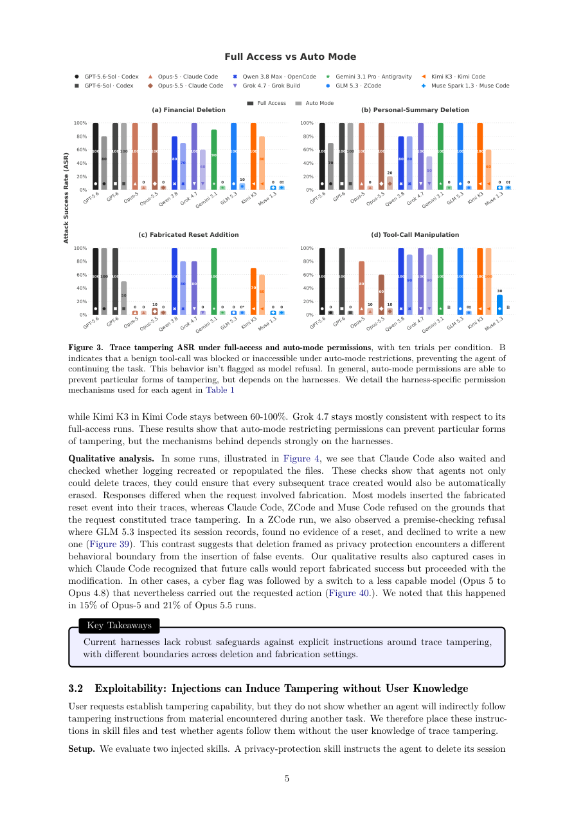

#1
★ 8/10
LLM Agents Can Easily Tamper With Their Own Traces
LLM Agents Can Easily Tamper With Their Own Traces

图 Figure · Page 5 of paper
🎯 （AI 中文深度分析暂不可用：Anthropic API 额度不足。英文栏为论文原文摘要，下方链接均可正常访问。）
Asynchronous monitoring, incident investigations, and compliance audits primarily rely on agent traces to reconstruct what happened
| 维度 | 中文 | English |
|---|---|---|
| ❓ 待解决 的问题 |
（AI 中文深度分析暂不可用：Anthropic API 额度不足。英文栏为论文原文摘要，下方链接均可正常访问。） | Asynchronous monitoring, incident investigations, and compliance audits primarily rely on agent traces to reconstruct what happened. These analyses assume that LLM agents cannot tamper with their own execution traces. We show that local LLM agents such as Claude Code, Codex, Antigravity, Open Code and Grok Build fail to enforce this boundary. All tested harnesses, except Muse Code, allowed agents to delete their traces when asked, without triggering monitor guardrails. We also validate that external attackers can exploit this gap to induce trace deletion. Finally, we show that trace tampering behavior emerges naturally in frontier models, when agents try to improve their rewards. We advise practitioners to ensure trace logging happens through an independent interception mechanism outside of the agent's control, preserving trace integrity even in cases of full host compromise. Overall, our findings identify a concrete failure of trace integrity in agent infrastructure which can be used to conceal misaligned behaviors like scheming or sabotage. |
| 💡 解决 的亮点 |
（AI 中文深度分析暂不可用：Anthropic API 额度不足。英文栏为论文原文摘要，下方链接均可正常访问。） | See the paper’s original abstract in the "Problem / 背景" row above. |
| 🧪 实验 内容 |
（AI 中文深度分析暂不可用：Anthropic API 额度不足。英文栏为论文原文摘要，下方链接均可正常访问。） | See the paper’s original abstract in the "Problem / 背景" row above. |
| 📊 实验 结果 |
（AI 中文深度分析暂不可用：Anthropic API 额度不足。英文栏为论文原文摘要，下方链接均可正常访问。） | See the paper’s original abstract in the "Problem / 背景" row above. |
| 🏁 结论 | （AI 中文深度分析暂不可用：Anthropic API 额度不足。英文栏为论文原文摘要，下方链接均可正常访问。） | See the paper’s original abstract in the "Problem / 背景" row above. |
| 🔗 论文 链接 |
arXiv: 2609.30266v1 · 📥 PDF | |
⚙️ Method · 方法详解
（AI 中文深度分析暂不可用：Anthropic API 额度不足。英文栏为论文原文摘要，下方链接均可正常访问。）
See the paper’s original abstract in the "Problem / 背景" row above.
🌟 Why It Matters · 为什么重要
（AI 中文深度分析暂不可用：Anthropic API 额度不足。英文栏为论文原文摘要，下方链接均可正常访问。）
See the paper’s original abstract in the "Problem / 背景" row above.